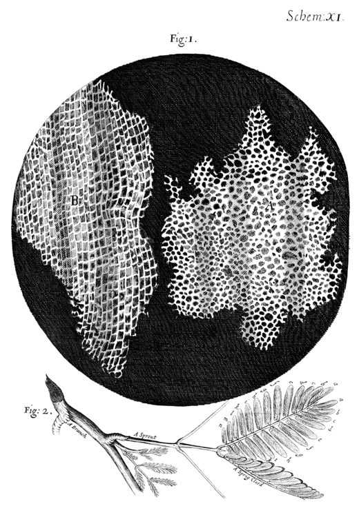
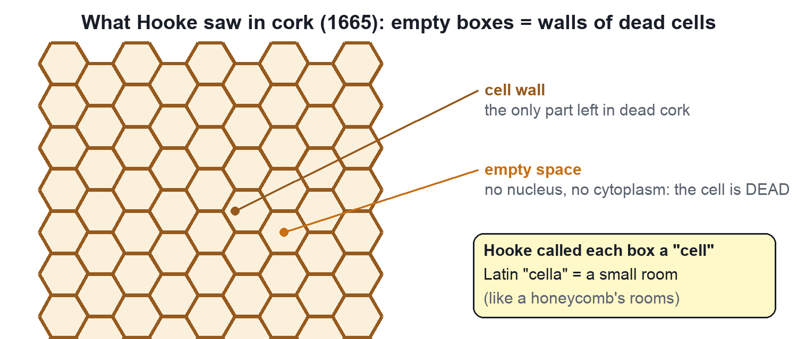
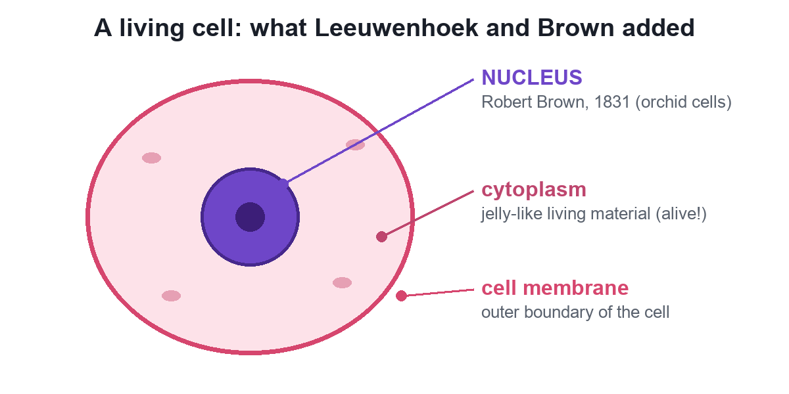
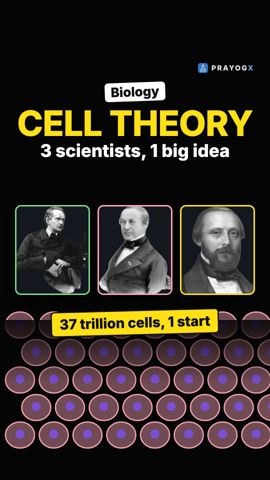

Chapter 5 · Biology
Discovery of the Cell
Video not playing? Watch on Instagram · YouTube
In 1665 a thin slice of cork showed tiny boxes Robert Hooke called cells. Then came living cells (1674) and the nucleus (1831).
Download the short notesPDF, 1.2 MB · solved examples, practice set and answer key Up next in this chapter
 Robert Hooke and the Discovery of CellsThe man who named the cell left no surviving portrait. Meet Robert Hooke, his book Micrographia, his lamp-lit microscope and his count of cork cells.Biology
Robert Hooke and the Discovery of CellsThe man who named the cell left no surviving portrait. Meet Robert Hooke, his book Micrographia, his lamp-lit microscope and his count of cork cells.Biology
Key points
- 1665, Robert Hooke: cork, honeycomb-like boxes, named cells (Latin cella, a small room).
- Hooke's cork cells were dead: only cell walls.
- 1674, Leeuwenhoek: first living cells, in pond water.
- 1831, Robert Brown: the nucleus.
1665: cork and the word 'cell'


1674 and 1831: living cells and the nucleus
With better lenses, Antonie van Leeuwenhoek saw free, moving cells in a drop of pond water in 1674. In 1831 Robert Brown found a round, dense body in orchid cells: the nucleus.

The timeline

| Year | Scientist | Discovery |
|---|---|---|
| 1665 | Robert Hooke | Cells in cork (dead); named them cells |
| 1674 | Leeuwenhoek | Free-living cells in pond water |
| 1831 | Robert Brown | The nucleus |
| 1839 | J. E. Purkinje | Named the living fluid protoplasm |
| 1838–39 | Schleiden, Schwann | The cell theory |
| 1855 | Virchow | All cells arise from pre-existing cells |
Quick quiz
4 questions. Choose an answer for each, then submit to see your score and the explanations.
More from The Fundamental Unit of Life

Cell TheoryYour body has about 37 trillion cells. Three scientists showed that every living thing is built from cells, and every cell comes from another cell.Biology Unicellular and Multicellular OrganismsAn amoeba is one cell; you are about 37 trillion. In one, a single cell does everything; in the other, cells share the work.Biology
Unicellular and Multicellular OrganismsAn amoeba is one cell; you are about 37 trillion. In one, a single cell does everything; in the other, cells share the work.Biology